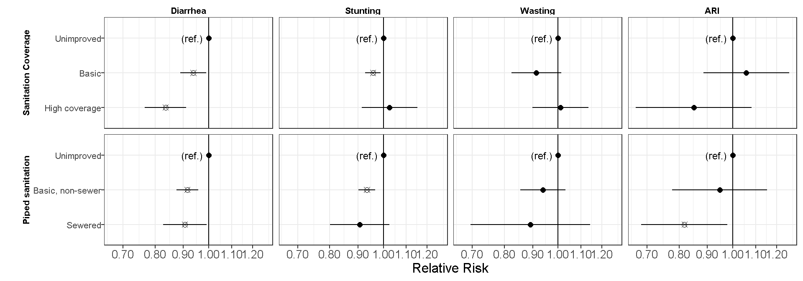
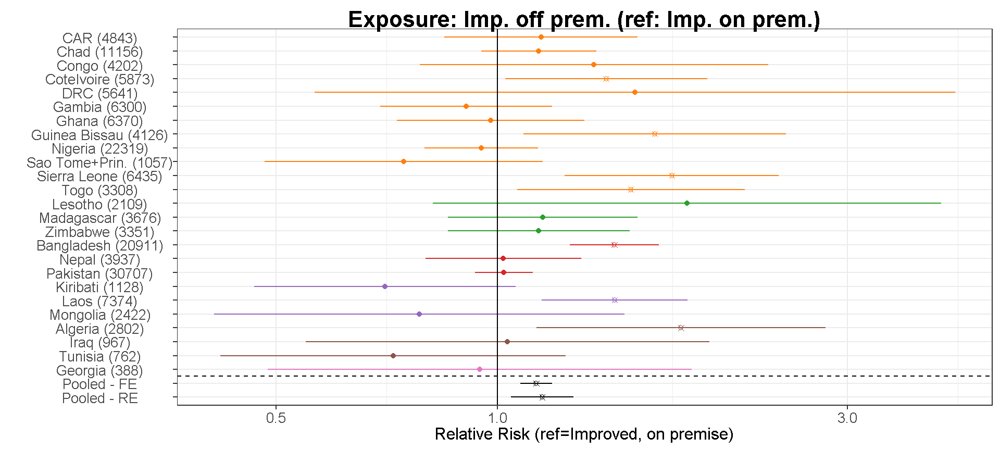
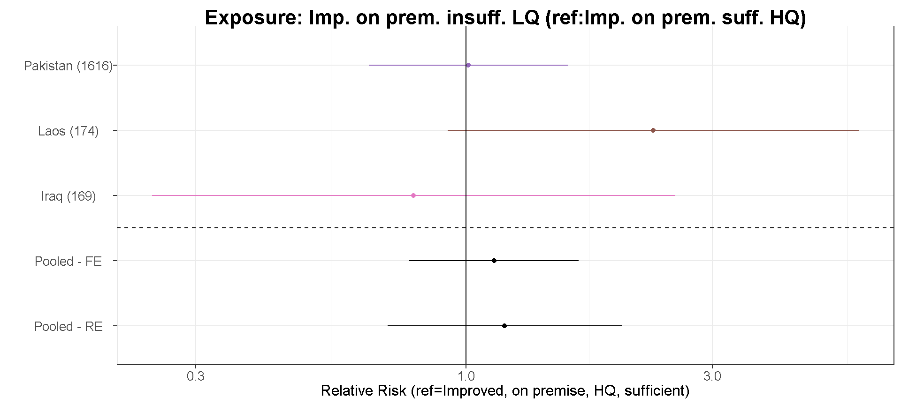
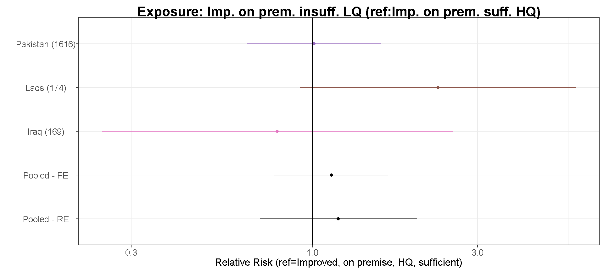
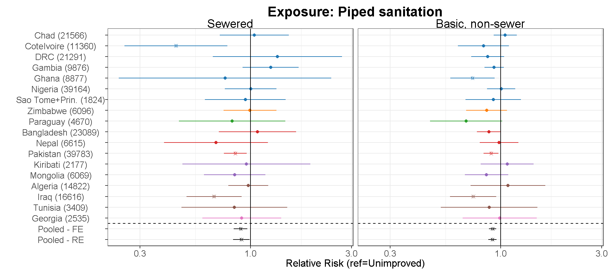

Secondary results
Notes for all plots: Crossed points denote significant estimates at an alpha level of 0.05. Reference levels are printed under the X-axis or denoted in the plots. All presented estimates are adjusted for confounder based on the procedure outlined in the methods section. Secondary contrasts are as follows:
Water:
- Improved, not on premise versus unimproved source (unimproved and surface together)
- Improved on premise versus Improved, not on premise
- Improved, on premise, high water quality versus Improved, on premise, not HQ water
- Improved, on premise, sufficient water versus improved on premise, non-sufficient
- Improved, on premise, HQ water plus sufficient water versus improved, on premise, not HQ water and non-sufficient
Sanitation:
- Unimproved (no facility, unimproved and limited combined) (baseline)
- Basic, non-sewer
- Basic connected to sewer
- Unimproved (no facility, unimproved and limited combined) (baseline)
- Basic (<75% coverage)
- Basic (≥75% coverage)
Relative risks between levels of drinking water access and binary outcomes

Figure 11. Relative risks between levels of drinking water access conditions Random-effects pooled relative risks, pooled over MICS surveys with water quality measurements, for child diarrheal disease, stunting, wasting, and acute respiratory infections (ARI). The Y axis lists the unimproved or unsafe level of contrast, with the relative risk estimates between the improved reference level and the higher-risk level. Note that less studies are used to estimate the contrasts including water quality measurements due to sparse data.
Relative risks between levels of sanitation access and binary outcomes

Figure 12. Relative risks across levels of household sanitation Random-effects pooled relative risks, pooled over MICS surveys with water quality measurements, for child diarrheal disease, stunting, wasting, and acute respiratory infections (ARI). The Y axis lists the type and level of sanitation characteristic, with the relative risk estimates between the printed reference levels and the higher-risk levels.
Forest plots of levels of water access and relative risks of diarrheal disease
 

Forest plots of levels of sanitation access and relative risks of diarrheal disease
